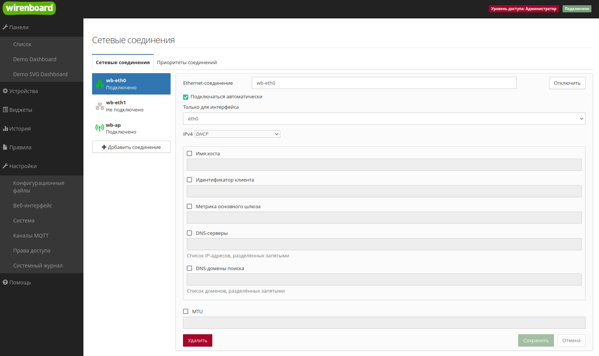
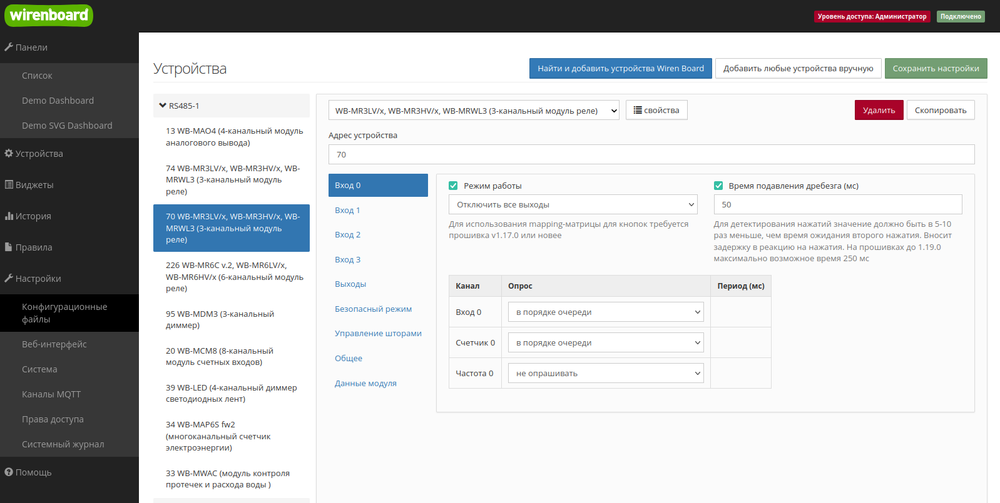
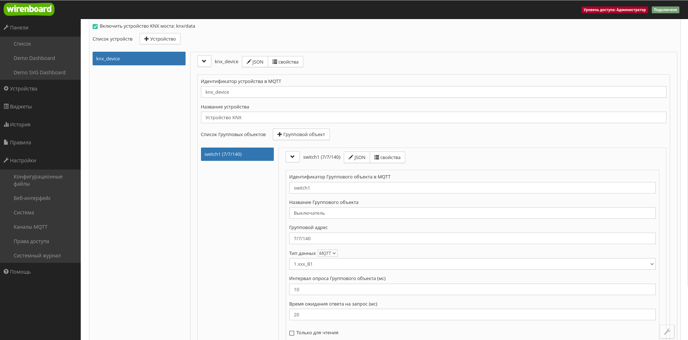
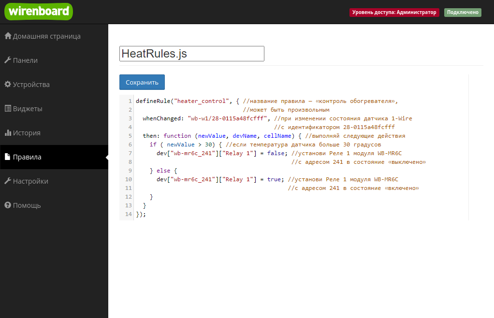

wb-mqtt-homeui¶
Общие сведения¶
Программное обеспечение для контроллеров Wiren Board основано на свободной операционной системе Debian Linux и состоит из набора дополнительных пакетов, с помощью которых можно решить большинство задач автоматизации.
ПО является неотъемлемой частью контроллера Wiren Board, поэтому пользователь не устанавливает его, а взаимодействует с ним через пользовательский интерфейс.
Для конечного пользователя разработан веб-интерфейс, который позволяет настраивать и эксплуатировать контроллер, а также обновлять программное обеспечение, писать скрипты автоматизации и просматривать архив данных.
Для продвинутых пользователей доступна текстовая консоль контроллера, доступ к которой можно получить через SSH.
 Контроллер Wiren Board
Контроллер Wiren Board
Доступ к веб-интерфейсу¶
Веб-интерфейс предустановлен на все контроллеры Wiren Board с завода и для доступа к нему нужно знать ip-адрес контроллера, который необходимо ввести в адресной строке современного браузера. Рекомендуем использовать браузеры Mozilla FireFox и Яндекс.Браузер.

Веб-интерфейс контроллера в браузере Firefox
Смена прав доступа¶
В контроллере предусмотрены три роли:
- пользователь — может просматривать панели и историю;
- оператор — может создавать и редактировать панели;
- и администратор — имеет полный доступ к настройкам и правилам.
Чтобы менять настройки, нужно выставить права доступа «Администратор».
 Страница смены прав доступа
Страница смены прав доступа
Смена языка веб-интерфейса¶
Контроллер поддерживает русский и английский языки веб-интерфейса. Переводятся панели, меню и каналы устройств, если язык был задан разработчиком шаблона.
По умолчанию выбирается язык, установленный пользователем в браузере, через который открыт веб-интерфейс, но вы можете это изменить. Зайдите в раздел «Настройки» → «Веб-интерфейс» и выберите язык в разделе «Общие параметры».
 Настройка языка
Настройка языка
SSH¶
SSH — это протокол, при помощи которого можно получить доступ к текстовой консоли Wiren Board через локальную сеть или Интернет.
Консоль контроллера — это инструмент администратора, который позволяет изменять системные настройки, обновлять программное обеспечение и устанавливать сторонние программы. Также по SSH можно загружать и скачивать файлы.
 Контроль контроллера Wiren Board
Контроль контроллера Wiren Board
Учетная запись по умолчанию: логин root, пароль wirenboard.
Рекомендуем после первого входа сменить пароль, для этого введите в консоли контроллера команду passwd и дважды введите новый пароль:

Подключиться по SSH можно несколькими способами:
- В Windows с помощью специальных программ, например, Putty.
- В Linux командой вида ssh root@192.168.42.1, где root — логин.
Настройка контроллера¶
Контроллер — сложное устройство и для его настройки есть специальный конфигуратор, который позволяет настраивать:
- сетевые интерфейсы контроллера;
- параметры NTP-клиента;
- подключённые к контроллеру модули расширения и ввода-вывода;
- подключенное по RS-485 оборудование;
- сервис подключения к устройствам KNX;
- аналоговые и цифровые входы-выходы контроллера;
- параметры архива данных;
- шлюз Modbus TCP/RTU протоколов;
- сервис SMS и email-оповещений.
Инструмент находится на вкладке «Настройки»→«Конфигурационные файлы» и доступен только в режиме администратора.
 Перечень настроек
Перечень настроек
Сетевые интерфейсы¶
В контроллере есть несколько сетевых интерфейсов: два Ethernet, Wi-Fi клиент и точка доступа, опционально 4G модем.
Все они настраиваются из веб-интерфейса контроллера в разделе «Настройки» →«Конфигурационные файлы» → «Сетевые соединения».
Так как интерфейсов много, то может понадобится задать приоритет их работы: если на одном интернет пропал, переключаемся автоматически на другой.
По умолчанию контроллер создаёт открытую Wi-Fi точку доступа, рекомендуем отключить её или включить шифрование и установить пароль.
 Пример настройки сетевого интерфейса
Установка времени¶
Контроллер Wiren Board с завода настроен на синхронизацию времени через интернет по протоколу NTP. Если у контроллера есть доступ в интернет и установлен верный часовой пояс, то настраивать ничего не нужно.
Пользователь может изменить адреса NTP серверов, для этого надо перейти в раздел «Настройки» →«Конфигурационные файлы» → «Синхронизация даты и времени (NTP)».
 Пример настроек синхронизации времени
Пример настроек синхронизации времени
Если у контроллера нет доступа в интернет, а в вашей локальной сети нет сервера времени, время можно задать вручную:
- подключитесь к контроллеру по SSH;
- отключите автоматическую синхронизацию командой timedatectl set-ntp 0
- установите время командой timedatectl set-time '2020-10-12 01:58:00'
- синхронизируйте аппаратный таймер контроллера с новым временем командой hwclock --systohc --localtime
Настройка аналоговых входов A1…A4¶
Входы A1…A4 универсальны и могут обрабатывать как дискретные сигналы, так и аналоговые. Кроме этого они могут работать в режиме выхода, режим выбирается в интерфейсе пользователя в разделе «Устройства».
Сами аналоговые входы настраиваются в разделе «Настройки» →«Конфигурационные файлы» → «Аналоговые входы».
Настройка модулей расширения и портов¶
На борту контроллера есть множество портов ввода-вывода, которые можно настроить в разные режимы.
Кроме этого в контроллер можно устанавливать модули расширения и подключать боковые модули WBIO.
Всё это настраивается в веб-интерфейсе контроллера в разделе «Настройки» →«Конфигурационные файлы» → «Модули расширения и порты».
Аналоговые входы A1…A4 настраиваются отдельно.
 Пример настройки модули WBIOModbus и другие устройства, подключенные к последовательному порту
Пример настройки модули WBIOModbus и другие устройства, подключенные к последовательному порту
В контроллере есть два физических последовательных порта RS-485, ещё три можно добавить модулями расширения. Также драйвер контроллера умеет работать с виртуальными сетевыми портами.
Перед настройкой параметров устройств, их надо добавить. Далее пользователь задаёт мышкой нужные параметры и сохраняет результат.
 Пример настройки подключенного устройства
KNX-устройства¶
К контроллеру можно подключать любые KNX-устройства: панели, реле, датчики, кнопки и т.п.
Пользователь может настроить групповые адреса вручную или загрузить проект из конфигуратора ETS.
Загрузка конфигурации ETS делается через консоль, для этого:
- Выгрузите проект из ETS.
- Загрузите его на контроллер.
- Выполните команду wb-knx-ets-tool ETS_CONFIG /etc/wb-mqtt-knx.conf, где ETS_CONFIG — пусть к выгруженному выше конфигу.
 Пример настройки групповых адресов
Создание интерфейса пользователя¶
Для управления контроллером Wiren Board и подключенными устройствами есть текстовые и графические панели управления.
Инструмент находится на вкладке «Панели» и доступен только в режиме администратора.
Текстовая панель¶
Основной элемент текстовой информационной панели — виджет. Виджет позволяет вывести в одном месте информацию из разных источников.
Кроме показа информации виджет может содержать элементы управления: переключатели, кнопки и ползунки для выбора значения из диапазона. На этапе создания виджета вы задаете ему название, выбираете какие данные он будет отображать и как они будут называться. Количество виджетов на одной панели не ограничено.

Пример текстовой панели
Интерактивная SVG-панель¶
SVG-панель — это интерактивная графическая панель. С помощью SVG-панелей можно создавать виртуальные пульты управления автоматикой объекта и мнемосхемы технологических установок.
Чтобы создать SVG-панель, нужно нарисовать в любом векторном графическом редакторе svg-изображение, загрузить его в ПО Wiren Board и привязать графические и текстовые элементы к источникам информации или элементам управления. Источниками информации могут быть любые MQTT-топики.
В веб-интерфейсе есть визуальный редактор, который упрощает процесс создания панели — выбираете элемент на svg-изображении и указываете какие данные в него выводить, как на них реагировать и что делать, если пользователь воздействовал на элемент.
Возможности:
- вывод текстовой или логической информации;
- изменение внешнего вида svg-элемента в зависимости от полученной информации: вы можете изменять цвет заливки и обводки, прозрачность элемента, а так же подменить полученное значение своим или скрыть/показать элемент;
- воздействие на исполнительные механизмы: включение и выключение нагрузки, изменение режимов работы устройств.

Пример графической панели
Скрипты автоматизации¶
Штатным инструментом автоматизации является собственный движок wb-rules, который позволяет составлять скрипты автоматизации на JS-подобном языке. Скрипты можно создавать и редактировать прямо в веб-интерфейсе, доступна отладка в консоли.
Возможности:
- автоматизация любых действий с данными или подключенными устройствами;
- чтение и публикация MQTT-топиков;
- работа с таймерами;
- работа с сервисами оповещений и предупреждений;
- создание виртуальных устройств со своей логикой;
- работа с файловой системой контроллера.
Инструмент находится на вкладке «Правила» и доступен только в режиме администратора. Пример скрипта автоматизации в редакторе
Просмотр архива данных¶
Вы можете анализировать изменение полученных контроллером данных во времени с помощью графиков. Источником архивных данных могут служить любые MQTT-топики и виджеты.
Возможности:
- выбор временного периода;
- одновременное отображение данных с нескольких источников;
- автоматическая расцветка графиков разными цветами;
- курсорные измерения на одном или нескольких графиках;
- масштабирование графика и перемещение по нему;
- просмотр дельты изменения значения;
- снятие скриншотов.
Параметры архива настраиваются в разделе «Настройки» →«Конфигурационные файлы» → «История данных MQTT».
 Пример просмотра архива значений
Пример просмотра архива значений
Отправка данных в ПО верхнего уровня¶
Контроллер Wiren Board может выступать в роли шлюза и обмениваться данными с программным обеспечением верхнего уровня: ПО других устройств, SCADA-системы, облачные MQTT-брокеры.
Шлюз Modbus RTU/TCP¶
Из веб-интерфейса можно настроить обмен данными с внешними устройствами и ПО по протоколам Modbus TCP и Modbus RTU. В этом случае контроллер будет выступать в роли Modbus Slave-устройства, а вы сможете не только считывать данные с контроллера, но и передавать команды подключенным к нему устройствам.
Настраивается шлюз в разделе «Настройки» →«Конфигурационные файлы» → «Шлюз MQTT - Modbus RTU/TCP slave».
 Пример настройки шлюза в Modbus TCP
Пример настройки шлюза в Modbus TCP
Шлюз OPC UA¶
Контроллер может выступать в роли шлюза и отдавать данные в систему верхнего уровня по протоколу OPC UA.
Настраивается шлюз в разделе «Настройки» →«Конфигурационные файлы» → «Шлюз MQTT - OPC UA». Пользователю надо выбрать, какие каналы надо транслировать по этому протоколу, а также указать адрес и порт. Остальное происходит автоматически.
 Пример настройки шлюза OPC UA
Пример настройки шлюза OPC UA
Шлюз МЭК¶
Контроллер может выступать в роли шлюза и отдавать данные в систему верхнего уровня по протоколу МЭК 60870-5-104. Протокол популярен в энергетике.
Настраивается шлюз в разделе «Настройки» →«Конфигурационные файлы» → « Шлюз MQTT - МЭК 60870-5-104». Пользователю надо выбрать, какие каналы надо транслировать по этому протоколу, а также указать адрес и порт.
 Пример настройки шлюза МЭК
Пример настройки шлюза МЭК
Просмотр системного журнала¶
В контроллерах Wiren Board используется системный сервис журналов journald, который обрабатывает события на запись в лог и сохраняет их в бинарные файлы. Если в процессе эксплуатации контроллера или подключённых устройств возникли ошибки — в первую очередь нужно посмотреть сообщения системного журнала.
В веб-интерфейсе сообщения системного журнала доступны с помощью инструмента «Системный журнал», который находится на вкладке «Настройки».
Возможности:
- просмотр сообщений системного журнала;
- фильтрация сообщений по сервисам;
- экспорт загруженных сообщений в текстовый файл.

Просмотр системного журнала
Обновление ПО¶
Так как программное обеспечение постоянно совершенствуется, есть встроенный инструмент для загрузки образов ПО в контроллер.
Инструмент обновления ПО находится в разделе «Настройки» →«Система».
Тут же можно настроить подключение к облаку, собрать данные для диагностики и сбросить контроллер к заводским настройкам.
 Возможности раздела «Система»
Возможности раздела «Система»

Процесс обновления программного обеспечения через веб-интерфейс